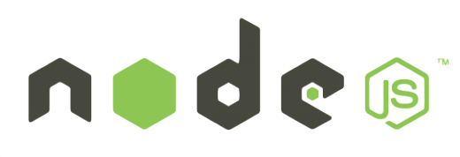

Node.js 0.8.0 에서는 v8 및 플랫폼 추상화 라이브러리인 "libuv" 에 많은 노력을 기울여 속도가 크게 개선되었다고 합니다. Node.js 블로그에 공개한 테스트 결과에 따르면 파일 I/O 에서 2 ~ 3배 정도의 성능향상을 보이며 웹 서버의 처리량을 향상시키고 있습니다.
 오픈 소스의 가장 중요한 에코시스템인 모듈 시스템이라고 할 수 있습니다.
노드 창시자인 라이언(@ry)은 0.6 버젼 이후 NPM 개발자인 아이작(@issac) 에게 넘어가면서 좀더 완벽한 시스템으로 발전해왔습니다. 이번 v0.8 의 주된 목표인 플랫폼 호환성을 향상시키기 위해 파이썬에 의존하던 Waf 는 GYP 을 구현한 node-gyp 로 전환하되었습니다.
GYP 는 'Generate Your Projects' 의 약자로 Visual Studio, XCode, SCons 등에서 크롬 프로젝트의 빌드 파일을 생성하기 위한 플랫폼에 독립적인 포맷입니다.
이와 더불어 향후 버젼에서는 기존의 NPM]모듈도 npm install module 이 아닌 node install module 형태로 변경하는 작업 진행중에 있습니다. 이번 릴리즈를 통해 노드는 좀더 쉽고 좀더 빠르고 좀더 넓은 플랫폼에서 기존의 솔루션들과 경쟁할 수 있게 되었습니다.
그외 노드 공식사이트에서 소개하고 있는 v0.8 의 개선사항은 다음과 같습니다.
위의 주된 변화중 몇가지를 살펴보면
http.Server 클래스의 listen 메소드에서 파일 디스크립터(이하 FD)를 지정할 수 있게 되었습니다. Node v0.4 에서 폐지된 listenFD 메서드에 해당되는 이야기인데 FD 를 지정함으로써 내부에서 소켓을 공용할 수 있게 되었습니다. 사실 이건 cluster 모듈의 주된 처리 방식이나 listenFD 메소드를 사용하는 경우가 많아 다시 구현하게 되었습니다.
cluster 모듈도 대폭 강화되어 모듈 전체를 다시 작성하고 있습니다. 대부분의 API 는 이전 버젼과의 호환되고 Node v0.6 에서 cluster 모듈을 사용하더라도 코드가 제대로 작동할 뿐만 아니라 성능도 향상되었다고 합니다.
새로운 모듈인 domain 모듈은 여러 I/O 작업을 그룹화하여 처리하는 방법을 제공하기 위한 방법으로 현재까지 실험적인 모듈로 이벤트 메커니즘이 구현된 여러 객체와 콜백함수를 도메인 객체에 등록 관리하는 것이 가능하게 됩니다.
var serverDomain = domain.create();
serverDomain.run(function() {
http.createServer(function(req, res) {
// I/O 작업을 그룹화 하기 위해 도메인 생성
var reqd = domain.create();
reqd.add(req);
reqd.add(res);
reqd.on('error', function(er) {
//req 혹은 res 객체에서 작업중 error 이벤트가 발생하면 이 콜백 함수가 수행된다.
//서버에서 처리하다가 에러가 발생했으니 500 에러 띄우는 처리
res.writeHead(500);
res.end('Error occurred, sorry.');
res.on('close', function() {
reqd.dispose();
});
}).listen(1337);
});
Node.js 0.6.0 버젼은 올해 계속해서 심각한 버그 수정 및 보안 패치 체공을 유지할 계획이며 수일 내로 v0.9 개발 버젼이 시작될 예정입니다.